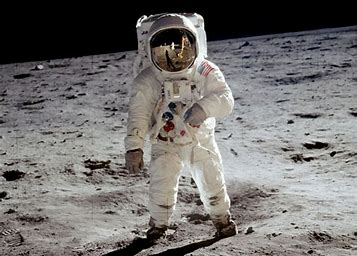
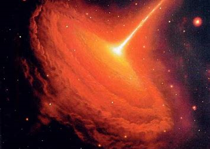
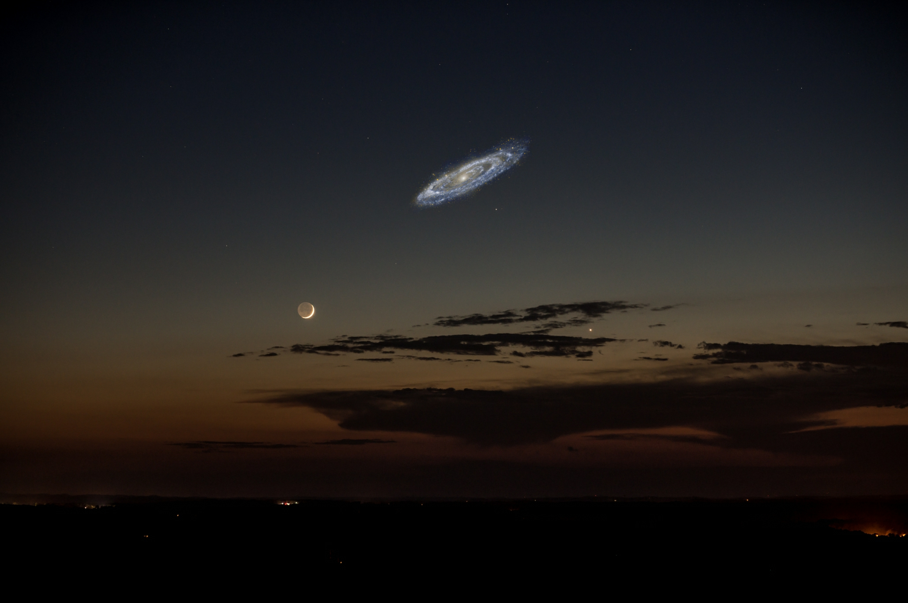
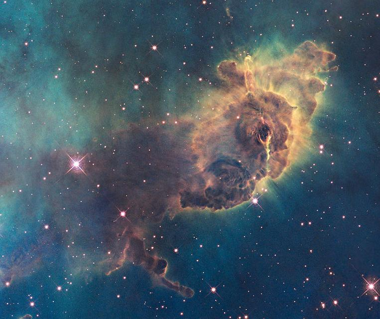
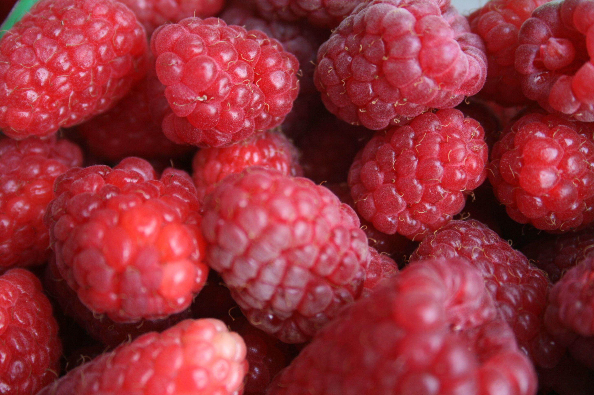
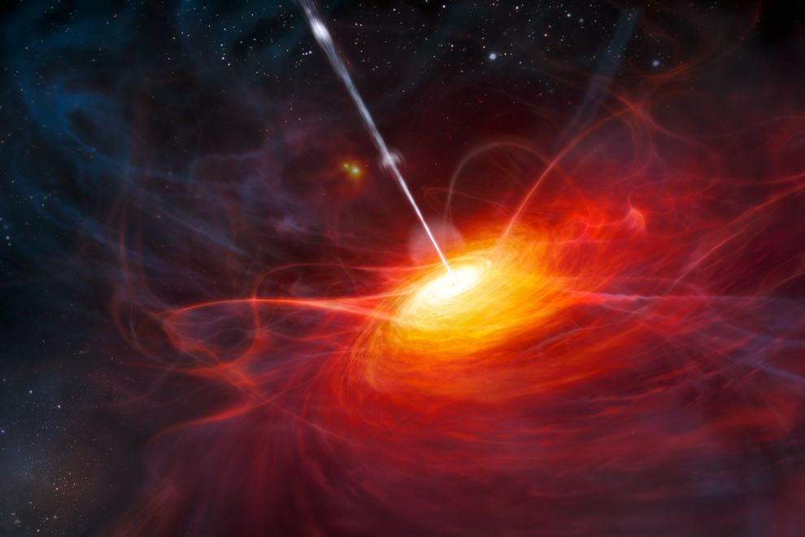

Welcome To The World Of Space

The Andromeda galaxy is our closest galactic neighbor, roughly 2.5 million light-years away. Though it is 140,000 light-years across, it isn’t bright enough to be seen in the night sky by our eyes. If it were brighter, it would appear six times larger than the full moon.
Though the birth and death of stars don't happen instantaneously, the process happens fairly frequently. By using observed star formation and supernova events within the Milky Way, astronomers have estimated that 275 million stars are born and die throughout the observable universe each day. This totals more than 100 billion over the course of a year.

Our solar system may smell like hot metal and seared steak, but what about the middle of the Milky Way? According to recent research from the Max Plank Institute, it smells like raspberries and tastes like rum. They found that ethyl formate, a key chemical component for both raspberries and rum, can be readily found at the center of our galaxy. Can’t choose between raspberries or rum? Why not just soak the berries in the rum and call it a party?
Quasars occur when gas swirls around a black hole very quickly, and friction causes it to heat up, emitting light. Astronomers have a discovered a group of 73 quasars that are over 6.5 times larger than the average quasar group. This structure is over four billion light-years wide, and actually cannot be explained by the Theory of General Relativity. Theoretically, it shouldn’t even exist.